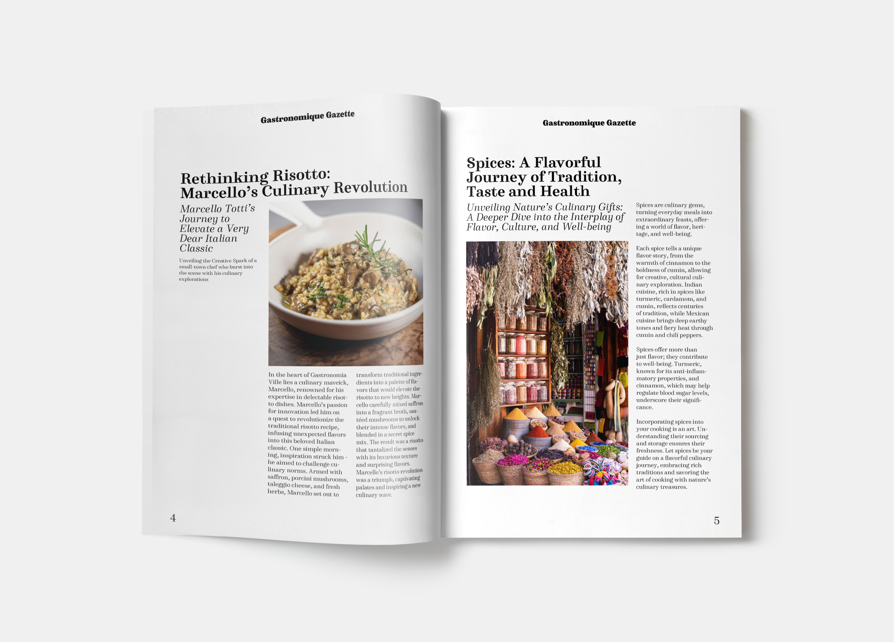
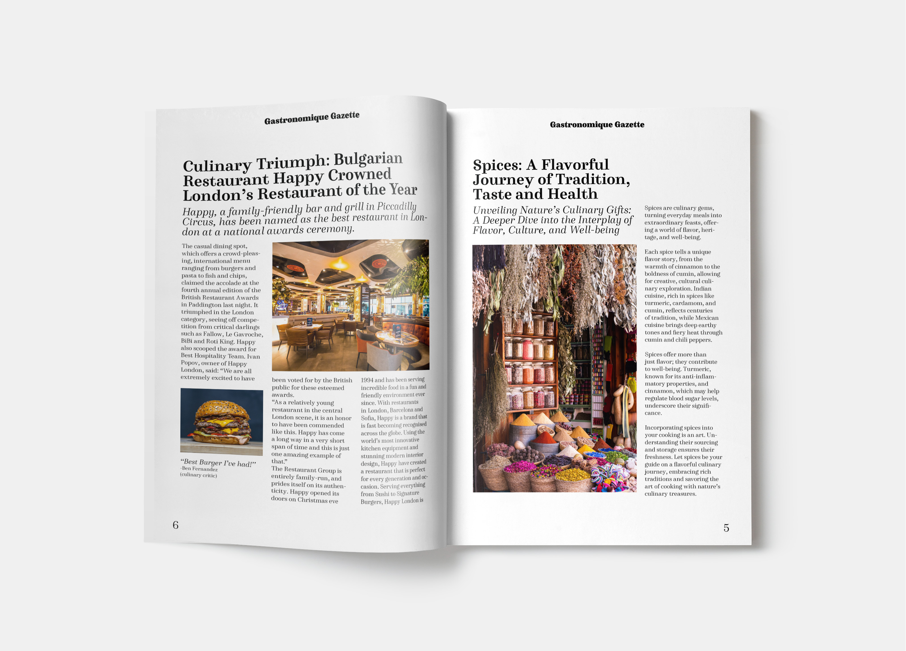

Vasilena Georgieva's portfolio
Home
My work
Contact
Magazine design


"Gastronomique Gazette" is a culinary magazine that exudes a sophisticated yet approachable charm in its design. The magazine's layout and aesthetic capture the essence of culinary excellence and the artistry behind food.